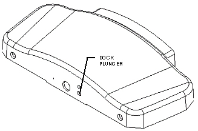
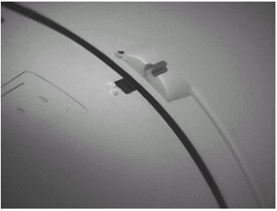

Operating Documentation
Direction 5133315-3, Rev# 14
Signa EXCITE HD 1.5T Service Methods
Module Version 1.0, Version Date 5/3/07
Operating Documentation |
| Required Persons | Preliminary Reqs | Procedure | Finalization |
|---|---|---|---|
| 1 |
This procedure describes the replacement of the Temperature Sensor located in the front end bell of the open enclosure for Signa systems with the LCC Wide Open Magnet.
| Item | Qty | Effectivity | Part# | Manufacturer | |
|---|---|---|---|---|---|
| Temperature Sensor Cable Kit | 1 | - | 46-328326G1 | - | |
| Digital Volt Meter (DVM) | 1 | - | - | - | |
| Standard Screwdriver | 1 | - | - | - | |
| Philips Screwdriver | 1 | - | - | - | |
| Adjustable Hex Wrench or Socket Set | 1 | - | - | - | |
| Allen Wrench Set | 1 | - | - | - | |
| 2" x 4" piece of wood (approximately 18 - 20 inches long) | 1 | - | - | - | |
| Two to three people required for removing end bells. | 2-3 | - | - | - | |
| Condition | Reference | Effectivity |
|---|---|---|
Be sure that your Temperature Sensor Cable Kit has all the required contents, which are listed in Temperature Sensor Cable Kit. | - | - |
Undock and move Patient Transport out of the way of the front cover of the magnet.
While holding in the patient transport dock plunger (see Illustration 1), move the carriage to the rear of the magnet by pressing the “In Fast” button on the enclosure.
Illustration 1: HOLDING DOCK PLUNGER

Lock out and tag out circuit breaker MR1 A14 CB6 at rear of RF/Pen Cabinet (MR1) on magnet enclosure power supply (MEPS) module.
For RF/Pen II and RF/PDU Cabinet: Lock out and tag out circuit breaker MR1 A20 CB4 at rear of RF/Pen II and RF/PDU Cabinet on System Support Module (SSM).
Using the DVM, verify that voltage between MR1 A14 TP1 (+) and TP14 (–) is 0 Vdc.
For RF/Pen II and RF/PDU Cabinet, Verify voltage between MR1 A20 TP1 (+) (Dock) and TP14 (–) (Dock RTN) is 0 Vdc.
Remove the bridge. See Bridge Removal.
Remove the cosmetic cover between the front end bell and the RF Coil by removing one of the Patient Light supports. The temperature sensor is located on the upper right side of the RF Coil.
Remove the tape that secures the temperature sensor to the RF Coil.
Remove the temperature sensor and the cable from the front end bell.
Install the replacement sensors into the holes in the RF Coil. See Illustration 2.
Illustration 2: RF COIL

Install the provided tape over the temperature sensor.
Route the cable into the grove on the front end bell and reconnect the cable.
Re-install the Patient Light support, then re-install the cosmetic cover.
Re-install the bridge. See .
Remove lock out and tag out circuit breaker MR1 A14 CB6 at rear of RF/Pen Cabinet (MR1) on magnet enclosure power supply (MEPS) module.
For RF/Pen II and RF/PDU Cabinet: Lock out and tag out circuit breaker MR1 A20 CB4 at rear of RF/Pen II and RF/PDU Cabinet on System Support Module (SSM).
No finalization steps.